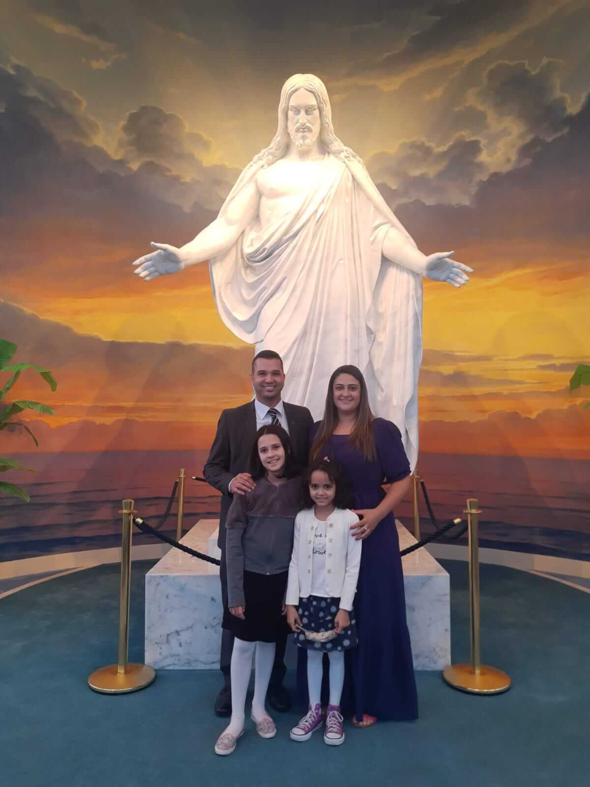

Jeferson Marcolino | WDD 130

Olá! Meu nome é Jeferson Marcolino e sou do Rio Grande do Sul, Brasil. Sou contador por formação e gosto muito de empreendedorismo, mercado financeiro e tecnologia.
Sou pai de duas lindas garotas e casado com minha rainha, Daniele. Somos membros de A Igreja de Jesus Cristo dos Santos dos Últimos Dias.
Estou animado para aprender desenvolvimento web neste curso.